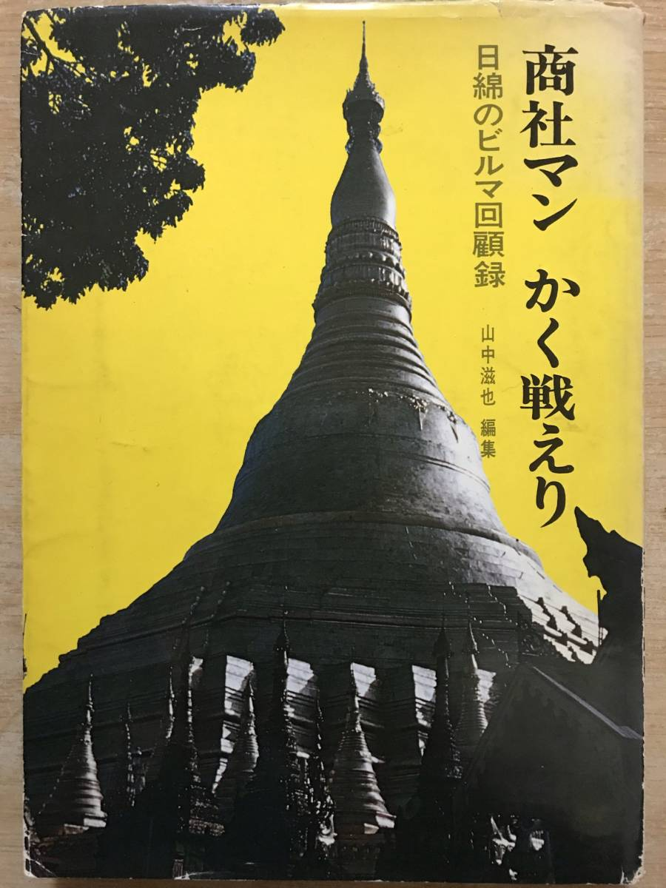
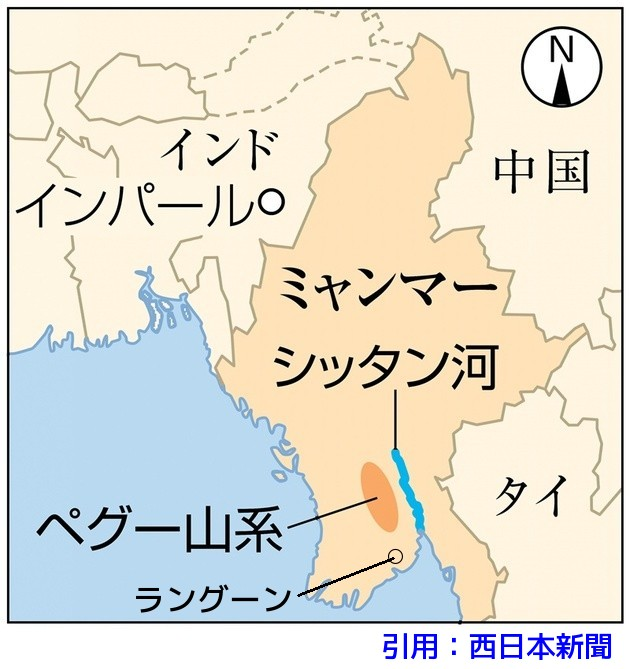

四年前のある日、父の勤めていた会社で『商社マンかく戦えり』という自費出版の本を出していることを知った。

この話を聞いて私は、父が力つきて倒れたという場所になるべく近い所へ行きたいと思い、夫と二人で一九九六年十月、ビルマ(現在のミャンマー)へ旅をすることにした。
私たちはヤンゴンから運転手と通訳の人に同行してもらい、シッタン河に向かった。 治安の問題があって、父の亡くなったと思われる所まではさかのぼることができなかった。
シッタン河は幅が広く、私の立っている崖のずっと下を茶色の水が流れていた。
十月のミャンマーは乾期だから、中の島が百メートル位向こうに見えていたが、五月から九月頃の雨期には中の島はなくなるという。
この本のまえがきには次のように書かれている。
「この本は太平洋戦争中ビルマに於ける日綿社員の活動状況や戦争末期の悲惨な転進状況を戦死した遺族及び生還者の家族、子孫にありのままの状況を伝え、戦争がいかに悲惨なものであるか、平和がいかに貴いものであるか知ってもらいたい念願から生還者の有志が集い、執筆したものである。」
そこで、この書の中から、編者の山中氏の許可を得て、戦争末期の悲惨な状況の一部を転載させていただく。
昭和二十年四月二十三日、日綿ラングーン支店は営業停止となり、二十四日、四十五歳以下の男子に召集令状が渡されて武装し転進することになった。
そして、七月ペグー山系を脱出するためにシッタン河を渡ることになったのである。 七月と言えば雨期も最盛期、雨期ともなれば雨雲は切れ目なく大地を覆い、雨を注ぎやむことを知らず、暗雲の世界となる。
ラングーン陥落も刻々と迫ってきたので、軍は「各社は機能を停止し工場を爆破して敵に利用されぬよう処置せよ。また、老人婦女子又は兵役に関係ないものは直ちにラングーンを撤退せよ。」との命令を出したが時既に遅く、これらの人々は途中爆撃や反乱軍に打たれ、相当の犠牲者を出した。
独立混成旅団に編成された商社部隊は四月二十九日、ラングーンを撤退して戦闘体制を整え行動を開始した。
ーこうして父たち商社部隊の死の転進が始まったのである。ー

雨期の最盛期、負け戦の転進は雨の中をずぶぬれになりながら毎日川を渡り、沼となった湿地帯を歩かねばならぬ。 雨がやむと飛行機が低空で飛行するから水遁(すいとん)の術を使わねばならぬ。
シッタン河は濁流が渦巻きうねりを作って躍動して流れる。 その流れの中央から「助けてくれ。昨日から流れているんだ。」と叫んでいる兵隊を見た。 しかし我々にはどうすることもできない。 急流に逆らい河を進むのである。 力尽き濁流にのまれ姿を消していく者、ようやく岸に着いても沼に脚をとられ身動きのとれない状態のまま溺死する者、マラリア・アミーバ・赤痢に悩まされ、濁流と雨の道なき泥沼に阻まれ次々と消えていった。
戦死の知らせを受けた後、我が家に戻ってきたのは遣骨ではなく、中に木片が一枚入っている白木の箱だけであった。 あのときのカタカタと鳴る木片の音が今も耳に残っている。 父は本当に死んだのか、もしかしたらビルマで生きているのではないだろうかという気がしていた。 しかし、この本を読んで父の死を確認することができた。 「だれが、いつ、死亡又は行方不明になったか」を記す地図があったからである。 死後半世紀を過ぎてからのことである。
父は終戦を目前にした昭和二十年七月二十七日、シッタン河を登り切った場所辺りで力尽きて帰らぬ人となったのである。 三十八歳であった。
父が「行方不明」になったという知らせを受けたのは昭和二十年八月の初めだったろうか。 当時八歳の私にはその言葉は初めて聞くものであったが、母と祖母の心配そうな顔から大変な事なのだと知った。 戦争の末期、すでに状況はかなり悪かったビルマへ行かされる事が、どんなことなのか、父も母も知っていたに違いない。 戦争が終わった日の母の嬉しそうな顔が忘れられない。
日本に残した妻子や母親のことを考えたであろう父の気持ちを想像して、どんなに苦しかったろうと思う。 私たち母と子も父がいてくれたらと思うことが何度もあった。
戦争末期には軍の上層部の者は負け戦とわかっていながら、兵士でもない中年の男さえも戦争が続く間、駆り出していったのである。 人の命を虫けらのごとく扱ったのである。 そして死後、最下級の二等兵から二階級上の上等兵となり、靖国神社に奉られることになった。 靖国になんか奉られたくない。父を返して欲しい。
軍国主義と靖国神社靖国神社は戦時中に軍国主義を支える“象徴的存在”でした。 これは、出征前の兵士たちが参拝し、「靖国で会おう」という言葉が交わされたことに象徴されています。 このように、靖国神社は戦意高揚の場としても利用されてきました。
最初から、戦没者を「国家のために殉じた英霊」として称え、追悼する施設だった点が、他の神社とは大きく異なります。 戦争を計画・指導した戦争責任者も「英霊」としても合祀されています。純粋な慰霊や感謝の思いで参拝する人だけではなく、 国家のために家族を失った遺族や、侵略戦争の被害国には軍国主義を美化する施設だと批判的に受け止める人々がいます。
靖国神社は単なる神社ではなく、日本人の戦争観・歴史認識を映し出す鏡のような存在です。